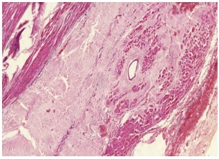
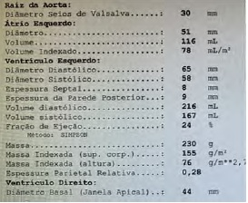
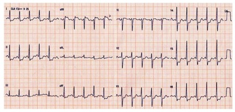
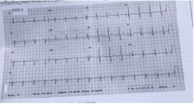
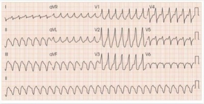
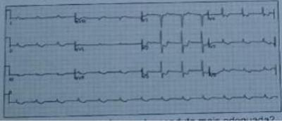
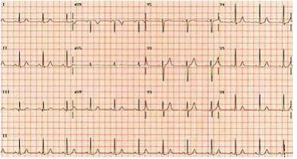
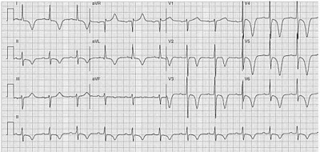
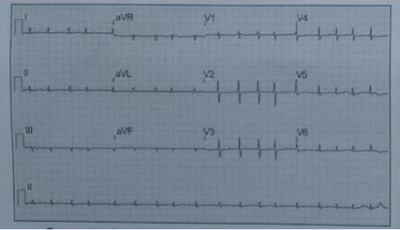
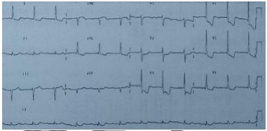

Questão 1 · Fibrinólise no tratamento do IAMCSST · Avaliação inicial · Eletrocardiograma · 4000185711Em relação à Síndrome Coronariana Aguda (SCA), é correto afirmar:
A A terapia fibrinolítica é crucial para salvar vidas, tanto na síndrome coronariana aguda com supradesnivelamento do segmento ST, quanto na SCA sem supra de ST.
B Cerca de um terço dos pacientes com IAM não têm dor no peito. Esses pacientes tendem a ser idosos, do sexo feminino, diabéticos e correm maior risco de morte subsequente.
C Paciente com dor torácica típica, mas com marcadores de necrose miocárdicas normais e sem supradesnivelamento do segmento ST, exclui-se infarto agudo do miocárdio.
D O deslocamento dinâmico do segmento ST é a alteração eletrocardiográfica mais sensível para a síndrome coronariana aguda.
E Se o nível de LDL- colesterol do paciente for baixo, não há recomendação de estatina na síndrome coronariana aguda.
Questão 2 · Inf arto Agudo do miocárdio com supra de ST IAMCSST · Cardiologia · 4000184376Homem, 67a, no início da manhã apresentou fortes dores na região central do tórax, que irradiavam para o pescoço, mandíbula e braço esquerdo, e di culdade para respirar. Foi imediatamente conduzido a uma Unidade de Emergência, chegando com sudorese acentuada e muito ansioso. Exame físico: PA=60x35mmHg; FC=120bpm; cianose de extremidades, pulsos fracos. Eletrocardiograma: sinais de extenso infarto do miocárdio anterolateral. Foram realizadas medidas iniciais de suporte de vida e indicado cateterismo cardíaco, mas antes disto evoluiu à óbito. Submetido à necropsia. A Figura mostra uma secção do coração. SOBRE A IMAGEM, É CORRETO AFIRMAR QUE:

A Há uma área de infarto do miocárdio antigo e o novo infarto é muito recente para ser identificado à histologia convencional.
B Há uma área de necrose coagulativa do miocárdio, compatível com o infarto recente.
C Existe uma hipertrofia dos cardiomiócitos decorrente de hipertensão arterial crônica.
D O infarto do miocárdio produziu redução súbita da pressão arterial, com trombose vascular e sinais de recanalização. ida oib pr ed
Questão 3 · Critérios de internação · Estratif icação de risco · Cardiologia · 4000183886Paciente do sexo masculino com 66 anos vai ao serviço de pronto atendimento e relata episódio de dor torácica em aperto, com irradiação para pescoço e mandíbula, iniciada durante atividade sexual, com sensação de morte iminente. Parou a atividade e procurou atendimento médico. A dor passou quando estava a caminho do pronto atendimento, após cerca de 15 minutos do seu início. Relata ser hipertenso, tabagista e dislipidêmico. Faz uso habitual de candesartana/hidroclorotiazida 16/12.5 mg e sinvastatina/ezetimiba 40/10 mg. Não foram observadas alterações ao exame físico e foi solicitado ainda teste de troponina ultrassensível, com resultado normal. Fez também o ECG reproduzido abaixo. Nesse caso, esse paciente deve ser estratificado, preferencialmente, como

A HEART Score 9 – cateterismo em até 2 horas.
B HEART Score 7 – cateterismo em até 24 horas.
C HEART Score 3 – teste não invasivo ambulatorial.
D HEART Score 5 – teste não invasivo em até 72 horas.
Questão 4 · Anticoagulantes · Antiplaquetários · Cardiologia · 4000182914Sobre o tratamento antitrombótico preconizado pela diretriz brasileira de síndrome coronária aguda sem supradesnivelamento de segmento ST, assinale a correta.
A Nos raros casos de pacientes com hipersensibilidade ao ácido acetilsalicílico, para dupla antiagregação, recomenda-se a combinação de clopidogrel com ticagrelor, ou clopidogrel com prasugrel, todos sem dose de ataque.
B O período de tratamento com enoxaparina em dose plena é por 5 dias. Após esse período, caso o paciente permaneça internado, deve ser reduzida para dose profilática de tromboembolismo venoso.
C Não há indicação rotineira de se iniciar inibidor do receptor P2Y12 como pré-tratamento em pacientes indicados para estratégia invasiva precoce (< 24h).
D Caso disponível no serviço, deve-se dar preferência ao fondaparinux como anticoagulante de escolha em pacientes de baixo risco hemorrágico e disfunção renal com clearance de creatinina < 20mL/min.
Questão 5 · Analgesia e sedação · Terapia antiisquêmica · Estatinas · 4000182752No que se refere ao manejo das síndromes coronarianas agudas sem supradesnível de segmento ST, analisar os itens abaixo: I. O uso definitrato é contraindicado em pacientes com pressão arterial sistólica menor que 90mmHg. II. O uso de estatinas de forma precoce e em doses elevadas (Atorvastatina 80mg ou Rosuvastatina 40mg) está associado a uma menor recorrência de síndromes coronarianas agudas. III. A administração concomitante de mor na pode retardar a absorção e diminuir o efeito antiplaquetário dos inibidores P2Y12 administrados por via oral (Clopidogrel, Ticagrelor e Prasugrel). Está(ão) CORRETO(S):
A Somente o item I.
B Somente os itens I e II.
C Somente os itens II e III.
D Todos os itens.
Questão 6 · História clínica e exame f ísico · Cardiologia · 4000181574Sr. Rudá, 63 anos, procura a Unidade de Saúde para renovar a receita de medicações (Losartana 50mg + Hidroclorotiazida 25mg, pela manhã + Amlodipina 5mg, ao deitar) e se queixa de dor no peito há cerca de 12 horas, iniciada durante seu trabalho como mecânico. Já teve o mesmo sintoma em outras ocasiões. Neste paciente, é correto afirmar que
A trata-se muito provavelmente de uma angina instável, uma vez que a dor torácica apresenta-se intermitentemente.
B os anti-hipertensivos em uso estão em dose baixa, mas não poderão ser aumentados com segurança em virtude da presença de sinais e sintomas suspeitos de hipopotassemia.
C a Síndrome Coronariana Aguda é um diagnóstico diferencial que deverá ser considerado, já que é portador de, ao menos, dois fatores de risco cardiovascular: idade e hipertensão arterial.
D por se tratar de um provável portador de hipertensão arterial, deverá ser avaliado seu risco cardiovascular na recepção. Caso seja identificado alto risco cardiovascular, deverá ser prescrita uma dose de AAS 100mg, ainda antes da consulta médica.
E dores osteomusculares justificam o quadro clínico, dada a atividade laboral do paciente, devendo, por isso, ser prescrito ibuprofeno 600mg três vezes ao dia por 7 dias, já que se trata de um medicamento seguro e com baixo risco de efeitos adversos.
Questão 7 · Drogas que previnem eventos cardiovasculares · Estatinas · 4000181560Sobre a prevenção cardiovascular na atenção primária a saúde, é correto afirmar que
A a aspirina está indicada para uso contínuo na prevenção secundária de pessoas que sofreram infarto do miocárdio.
B o uso das estatinas deve ser iniciado o mais precoce possível na prevenção primária, tendo em vista a baixa adesão das pessoas a mudanças do estilo de vida.
C é recomendado o uso de bebida alcoólica em doses superiores a 20 gramas ao dia para homens com vistas a reduzir o risco cardiovascular na prevenção primária.
D a realização de provas funcionais como o teste de esforço são úteis no diagnóstico precoce de doença coronariana, devendo ser iniciado a partir dos 20 anos.
E a US Preventive service Task Force e a Sociedade Europeia de Cardiologia recomendam a avaliação sistemática de risco cardiovascular a partir dos 30 anos em pessoas sem fatores de risco.
Questão 8 · Avaliação inicial · Síndrome Coronariana Aguda sem Supradesnível do Segmento ST SCASSST · 4000181544Paciente do sexo masculino com 60 anos de idade chega ao Pronto Socorro com dor retroesternal opressiva, forte intensidade, início há 30 minutos, apresentando sudorese, palidez e ansiedade. Realizado ECG, este apresenta ondas T isoelétricas em V3 a V6, sem alteração do segmento ST. Dosagem de mioglobina, troponina cTNI e creatina-quinase fração MB estão dentro da normalidade. Após 3 horas de observação, há melhora dos sintomas, ECG está inalterado e os biomarcadores cardíacos séricos estão elevados. Com estes dados clínicos e laboratoriais, qual o diagnóstico?
A Angina estável.
B Angina instável.
C Angina variante de Prinzmetal.
D Infarto do miocárdio com elevação do segmento ST.
E Infarto do miocárdio sem elevação do segmento ST.
Questão 9 · Tromboembolismo Pulmonar TEP · Avaliação ambulatorial do paciente com dor torácica · Cardiologia · 4000170568Um homem de 62 anos de idade, previamente hipertenso, refere que estava compensado e assintomático quando começou, há cinco meses, com dispneia aos esforços, após uma sensação de opressão no tórax, que melhorava parcialmente com o repouso e que perdurou cerca de cinco dias. Ele não procurou o serviço médico na época. Nega tosse, expectoração ou chiado. Nega tabagismo. Exame físico: PA de 140 x 76 mmHg; FC de 86 bpm; e saturação de O₂ (ar ambiente) de 91%. Ausculta cardíaca: hiperfonese e desdobramento de segunda bulha em foco pulmonar. Turgência jugular bilateral. Presença de estertores bibasais e de edema de membros inferiores. Exames laboratoriais: hemoglobina 12,2 g/dL; leucócitos 8.500/mm³; e plaquetas 152.000/mm³. Realizou, também, a radiografia de tórax reproduzida a seguir. Com base nesse caso hipotético, é correto a rmar que o exame indicado para se iniciar a investigação da dispneia do paciente é:

A tomografia computadorizada de tórax.
B prova de função pulmonar.
C ecocardiograma transtorácico.
D cintilografia de ventilação-perfusão.
E angiotomografia de coronária.
Questão 10 · Cardiologia · Terapia antitrombótica · 4000170043Homem de 65 anos, com IAM sem supra de ST, foi submetido à angioplastia de artéria coronária descendente anterior c o m significativas. A melhor estratégia de tratamento com antiagregante plaquetário é doses de ataque de AAS 200 mg
A e clopidogrel 300 mg, seguido por AAS 100 mg/dia e clopidogrel 75 mg/dia por 12 meses após o evento agudo.
B e ticagrelor 180 mg, seguido por AAS 100 mg/dia e ticagrelor 180 mg/dia por 12 meses após o evento agudo.
C e prasugrel 60 mg, seguido por AAS 100 mg/dia e prasugrel 10 mg/dia por 12 meses após o evento agudo.
D e prasugrel 60 mg, seguido por AAS 100 mg 1x ao dia e prasugrel 20 mg/dia por 6 meses após o evento agudo.
Questão 11 · Biomarcadores · Cardiologia · 4000169917Considerando-se os marcadores bioquímicos da lesão cardíaca, assinale e alternativa correta.
A A elevação dos níveis de troponina I no soro ocorre entre 3 e 12 horas após a dor precordial, atinge um pico em 24 – 48 horas e permanece elevada por 5 a 10 dias após um evento isquêmico único.
B A concentração da CK-MB se eleva de 3 a 8 horas após o processo lesivo, atinge um pico em 12 horas e normaliza em 72 horas após um episódio único e limitado.
C A determinação no soro da mioglobina pode ser útil para descartar o diagnóstico de infarto agudo do miocárdio, uma vez que possui elevado valor preditivo positivo.
D A determinação da creatina quinase total é recomendada para o diagnóstico de infarto do miocárdio sem elevação do segmento ST, por causa da ampla distribuição nos tecidos cardíacos.
E Desidrogenase láctica total e suas isoenzimas podem ainda ser utilizadas para complementação diagnóstica em casos de angina instável.
Questão 12 · Indicações de cateterismo de urgência · Cardiologia · 4000169364Um paciente de 65 anos de idade, previamente hipertenso, dislipidêmico, diabético insulinodependente, com nefropatia e retinopatia diabética, em investigação de doença do refluxo gástrico e em teste terapêutico com omeprazol iniciado há três semanas, procurou o pronto-socorro devido a quadro de dispneia, iniciado há quinze dias. Negava quadro semelhante prévio e passou a apresentar uma falta de ar progressiva. No momento da avaliação, estava dispneico ao repouso, com FR de 30, PA de 90 x 60, FC de 97, ausculta cardíaca sem particularidades e ausculta pulmonar com estertor crepitante bilateral. Optou-se, então, pela internação para manejo clínico do caso. Com base nesse caso hipotético, assinale a alternativa que apresenta o exame mais pertinente a ser realizado durante a internação.
A tomografia computadorizada, protocolo TEP
B angiotomografia computadorizada de aorta
C ultrassom pulmonar, com pesquisa de linha B
D D-dímero
E cineangiocoronariografia
Questão 13 · Critérios de internação · Estratif icação de risco · Cardiologia · 4000164835Paciente de 68 anos é admitido em serviço de emergência com quadro de dor torácica. A dor do paciente é considerada altamente sugestiva para doença coronariana aguda, sendo precordial em aperto, com irradiação para membros. Você realiza um eletrocardiograma que não apresenta alterações isquêmicas agudas. Mas diante da idade do paciente e do fato de ele ter sofrido um infarto do miocárdio há 3 anos, você opta por pedir troponina. Após duas dosagens de troponina ultrassensível com intervalo de 2 horas entre elas o paciente encontra-se assintomático e o resultado das dosagens é inferior ao valor de corte definido pelo método. Você aplica o escore HEART que apresenta um valor de 7 pontos. Qual seria a conduta mais adequada para esse paciente?
A Diante do resultado negativo para as troponinas ele pode receber alta e realizar seguimento ambulatorial.
B Como a dosagem das troponinas foi realizada com intervalo de 2 horas é necessário realizar uma terceira dosagem com 6 horas de diferença.
C O paciente deve ser submetido a terapia fibrinolítica imediatamente.
D Trata-se de um paciente de alto risco que deve ser internado para estratificação de risco nas próximas 24 horas, preferencialmente com um cateterismo cardíaco.
Questão 14 · Indicações de cateterismo · Cardiologia · 4000164302Homem, 67 anos, hipertenso, diabético tipo 2, dislipidêmico, obeso e tabagista ativo. Previamente assintomático, procura atendimento médico devido a quadro de dor torácica, em queimação, de intensidade 5/10, sem irradiação ou outros sintomas associados e que se inicia após realização de moderados esforços. Refere início da dor há 2 semanas, sendo que há 1 semana tem sido mais frequente e de maior intensidade. Exame físico: sem alterações significativas. Eletrocardiograma abaixo. Qual é o método de avaliação mais indicado para investigação do quadro clínico?

A Angiotomografia de coronária.
B Cintilografia miocárdica com dipiridamol.
C Cateterismo cardíaco.
D Teste ergométrico.
Questão 15 · Fisiopatologia · Cardiologia · 4000146637O infarto e a morte cardíaca são as principais causas de morte na cirurgia. Eventos clínicos, como taquicardia, anemia, uso de drogas simpaticomiméticas, dentre outros, podem levar ao desequilíbrio entre a oferta e o consumo de oxigênio miocárdio e, por conseguinte, provocar isquemia perioperatória. Ocorre que há outros mecanismos importantes envolvidos na isquemia perioperatória, sendo que há a sua divisão em duas fases, quais sejam:
A Fenômenos de instabilização e ruptura da placa aterosclerótica e os fenômenos de oclusão vascular.
B Fenômenos do vasoespasmo coronário e os fenômenos de estabilização e ruptura da placa aterosclerótica.
C Fenômenos de estabilização e ruptura da placa aterosclerótica e os fenômenos de oclusão vascular.
D Fenômenos do vasoespasmo coronário e os fenômenos de instabilização e ruptura da placa aterosclerótica.
Questão 16 · Cardiologia · Oxigenioterapia · 4000142366Um paciente de 54 anos de idade, com história de hipertensão arterial e dislipidemia, deu entrada no pronto-socorro com queixa de dor torácica retroesternal irradiada para a mandíbula há uma hora. Sinais vitais na entrada: pressão arterial de 140 x 90 mmHg; frequência cardíaca de 92; saturação de O2 de 94%; e frequência respiratória de 20. Exame cardiopulmonar: ritmo cardíaco regular, sem sopros; e presença de B3 e B4. Murmúrio vesicular audível bilateralmente, com estertores nos em ambas as bases. Eletrocardiograma revelou infradesnivelamento de ST. Com base nesse caso hipotético, julgue o item. Está indicada a suplementação de oxigênio por cateter nasal.
A Certo.
B Errado.
Questão 17 · Betabloqueadores · Cardiologia · 4000142365Um paciente de 54 anos de idade, com história de hipertensão arterial e dislipidemia, deu entrada no pronto-socorro com queixa de dor torácica retroesternal irradiada para a mandíbula há uma hora. Sinais vitais na entrada: pressão arterial de 140 x 90 mmHg; frequência cardíaca de 92; saturação de O2 de 94%; e frequência respiratória de 20. Exame cardiopulmonar: ritmo cardíaco regular, sem sopros; e presença de B3 e B4. Murmúrio vesicular audível bilateralmente, com estertores nos em ambas as bases. Eletrocardiograma revelou infradesnivelamento de ST. Com base nesse caso hipotético, julgue o item. No momento, está recomendada a prescrição de atenolol 25 mg VO.
A Certo.
B Errado.
Questão 18 · Fibrinólise no tratamento do IAMCSST · Revascularização miocárdica · Indicações de cateterismo · 4000142364Um paciente de 54 anos de idade, com história de hipertensão arterial e dislipidemia, deu entrada no pronto-socorro com queixa de dor torácica retroesternal irradiada para a mandíbula há uma hora. Sinais vitais na entrada: pressão arterial de 140 x 90 mmHg; frequência cardíaca de 92; saturação de O2 de 94%; e frequência respiratória de 20. Exame cardiopulmonar: ritmo cardíaco regular, sem sopros; e presença de B3 e B4. Murmúrio vesicular audível bilateralmente, com estertores nos em ambas as bases. Eletrocardiograma revelou infradesnivelamento de ST. Com base nesse caso hipotético, julgue o item. A trombólise é contraindicada para o paciente.
A Certo.
B Errado.
Questão 19 · Cardiologia · Nova def inição universal de inf arto · 4000142362Um paciente de 54 anos de idade, com história de hipertensão arterial e dislipidemia, deu entrada no pronto-socorro com queixa de dor torácica retroesternal irradiada para a mandíbula há uma hora. Sinais vitais na entrada: pressão arterial de 140 x 90 mmHg; frequência cardíaca de 92; saturação de O2 de 94%; e frequência respiratória de 20. Exame cardiopulmonar: ritmo cardíaco regular, sem sopros; e presença de B3 e B4. Murmúrio vesicular audível bilateralmente, com estertores nos em ambas as bases. Eletrocardiograma revelou infradesnivelamento de ST. Com base nesse caso hipotético, julgue o item. Trata-se de um infarto agudo do miocárdio sem supra de ST.
A Certo.
B Errado.
Questão 20 · Síndrome Coronariana Aguda sem Supradesnível do Segmento ST SCASSST · 4000132823Com relação às síndromes coronarianas agudas sem supradesnivelamento do segmento ST (SCASST), assinale a alternativa incorreta.
A Os betabloqueadores devem ser iniciados precocemente, na ausência de contraindicações.
B O emprego da nitroglicerina deve ser considerado quando houver precordialgia persistente, congestão pulmonar e / ou hipertensão arterial refratária.
C A mortalidade dos pacientes com SCASST, a longo prazo, é inferior à dos pacientes com síndrome coronariana aguda com supradesnivelamento do segmento ST.
D D) O escore GRACE (
Questão 21 · Ecocardiograma · Indicações de cateterismo · Eletrocardiograma · 4000131163Um paciente com história de dor torácica aos esforços comparece à consulta por estar mais cansado do que o normal. Refere que vem apresentando ortopneia e dispneia paroxística noturna. Foram realizados investigação laboratorial, Holter, ecocardiograma e cateterismo cardíaco. O ecocardiograma e o cateterismo estão representados a seguir. Tendo em vista esse caso clínico, as imagens apresentadas e os conhecimentos médicos correlatos, julgue o item a seguir. O eletrocardiograma desse paciente pode apresentar alterações isquêmicas, como onda precordiais.


A Certo.
B Errado.
Questão 22 · Ecocardiograma · Indicações de cateterismo · Cardiologia · 4000131160Um paciente com história de dor torácica aos esforços comparece à consulta por estar mais cansado do que o normal. Refere que vem apresentando ortopneia e dispneia paroxística noturna. Foram realizados investigação laboratorial, Holter, ecocardiograma e cateterismo cardíaco. O ecocardiograma e o cateterismo estão representados a seguir. Tendo em vista esse caso clínico, as imagens apresentadas e os conhecimentos médicos correlatos, julgue o item a seguir. Na imagem do cateterismo, observa-se lesão em artéria descendente anterior.


A Certo.
B Errado.
Questão 23 · Condutas iniciais · 4000129725Considere um paciente masculino, 59 anos, com antecedente de tabagismo (35 anos-maço), hipertensão arterial sistêmica e diabetes tipo 2. Iniciou há 1 semana com episódios de dor retroesternal, em aperto, sem irradiação, com duração de aproximadamente 7 minutos, desencadeados pelo esforço físico (caminhar 50 metros) e aliviados pelo repouso. Hoje apresentou um episódio de dor torácica com as mesmas características, exceto por não ter aliviado prontamente com o repouso, com duração total de 20 minutos, e por ter se associado a náuseas, sudorese profusa e palidez cutânea. Ao exame físico inicial apresenta palidez cutânea (++/4), frequência cardíaca de 88 batimentos/minuto, pressão arterial de 146/82 mmHg, frequência respiratória de 20 incursões/minuto, saturação de 97% em ar ambiente na oximetria de pulso e temperatura axilar de 36,5°C. A ausculta pulmonar e cardíaca não apresentava anormalidades. A dosagem de troponina I na admissão e 6 horas após se mostrou negativa e o eletrocardiograma realizado na admissão é mostrado abaixo: O paciente foi admitido na Emergência e no dia seguinte evoluiu com novo episódio de dor retroesternal, em aperto, irradiada para ambos os membros superiores, de forte intensidade, que se associou a dispneia e sudorese profusa. A dor iniciou em repouso e após 40 minutos não havia aliviado. Ao exame apresentava pressão arterial de 108/65 mmHg, frequência cardíaca de 120bpm, frequência respiratória 26irpm, saturação de oxigênio de 88% na oximetria de pulso em ar ambiente. A ausculta pulmonar revelou estertores nos em ambos os terços inferiores dos campos pulmonares posteriores e na ausculta cardíaca era possível notar a presença de terceira bulha. Um novo eletrocardiograma foi realizado e se encontra exposto abaixo: Assinale a alternativa correta quanto à conduta terapêutica indicada para o paciente descrito no caso:


A Terapia antitrombótica com ácido acetilsalicílico, clopidogrel e enoxaparina plena; tratamento da congestão pulmonar com furosemida e nitroglicerina; e terapia de reperfusão coronária com fibrinolítico.
B Terapia antitrombótica com ácido acetilsalicílico, tratamento da congestão pulmonar com furosemida; e estratégia invasiva tardia, com coronariografia e angioplastia coronária após a alta hospitalar.
C Terapia antitrombótica com ácido acetilsalicílico, clopidogrel e enoxaparina plena; tratamento da congestão pulmonar com furosemida e nitroglicerina; e estratégia invasiva precoce com coronariografia e angioplastia coronária nas primeiras 24 h.
D Terapia antitrombótica clopidogrel e enoxaparina plena, terapia antianginosa com betabloqueador; ventilação mecânica não invasiva; e estratégia invasiva tardia, com coronariografia e angioplastia eletivas durante a internação.
E Terapia antitrombótica com ácido acetilsalicílico; tratamento da congestão pulmonar com furosemida, nitroglicerina e betabloqueador; controle da frequência cardíaca com digitálico; e estratégia invasiva precoce com coronariografia e angioplastia nas primeiras 24 h.
Questão 24 · História clínica e exame f ísico · 4000129724Considere um paciente masculino, 59 anos, com antecedente de tabagismo (35 anos-maço), hipertensão arterial sistêmica e diabetes tipo 2. Iniciou há 1 semana com episódios de dor retroesternal, em aperto, sem irradiação, com duração de aproximadamente 7 minutos, desencadeados pelo esforço físico (caminhar 50 metros) e aliviados pelo repouso. Hoje apresentou um episódio de dor torácica com as mesmas características, exceto por não ter aliviado prontamente com o repouso, com duração total de 20 minutos, e por ter se associado a náuseas, sudorese profusa e palidez cutânea. Ao exame físico inicial apresenta palidez cutânea (++/4), frequência cardíaca de 88 batimentos/minuto, pressão arterial de 146/82 mmHg, frequência respiratória de 20 incursões/minuto, saturação de 97% em ar ambiente na oximetria de pulso e temperatura axilar de 36,5°C. A ausculta pulmonar e cardíaca não apresentava anormalidades. A dosagem de troponina I na admissão e 6 horas após se mostrou negativa e o eletrocardiograma realizado na admissão é mostrado abaixo: O paciente foi admitido na Emergência e no dia seguinte evoluiu com novo episódio de dor retroesternal, em aperto, irradiada para ambos os membros superiores, de forte intensidade, que se associou a dispneia e sudorese profusa. A dor iniciou em repouso e após 40 minutos não havia aliviado. Ao exame apresentava pressão arterial de 108/65 mmHg, frequência cardíaca de 120bpm, frequência respiratória 26irpm, saturação de oxigênio de 88% na oximetria de pulso em ar ambiente. A ausculta pulmonar revelou estertores nos em ambos os terços inferiores dos campos pulmonares posteriores e na ausculta cardíaca era possível notar a presença de terceira bulha. Um novo eletrocardiograma foi realizado e se encontra exposto abaixo: A estrati cação de risco nas síndromes coronarianas agudas sem supra do seguimento ST pode ser feita por meio de ferramentas validadas, como os escores TIMI (Thrombolysis In Myocardial Infarction) e GRACE (Global Registry of Acute Coronary Events). Porém, essas ferramentas não estavam disponíveis devido a problemas na rede de internet. Com relação à estrati cação de risco para o paciente descrito acima, assinale a alternativa que contém apenas fatores independentes de alto risco para eventos adversos presentes no caso:


A Dor em repouso por mais de 15 minutos; surgimento de terceira bulha; diabetes melito e infradesnivelamento do segmento ST.
B Hipotensão arterial; surgimento de congestão pulmonar; taquicardia e infradesnivelamento do seguimento ST.
C Diabetes melito; sexo masculino, idade acima de 50 anos; dor em repouso por mais de 15 minutos e dessaturação na oximetria.
D Dor em repouso por mais de 15 minutos; surgimento de terceira bulha; surgimento de congestão pulmonar e infradesnivelamento do segmento ST.
E Diabetes melito; tabagismo; infradesnivelamento do segmento ST e dessaturação na oximetria.
Questão 25 · Síndrome Coronariana Aguda sem Supradesnível do Segmento ST SCASSST · 4000129723Considere um paciente masculino, 59 anos, com antecedente de tabagismo (35 anos-maço), hipertensão arterial sistêmica e diabetes tipo 2. Iniciou há 1 semana com episódios de dor retroesternal, em aperto, sem irradiação, com duração de aproximadamente 7 minutos, desencadeados pelo esforço físico (caminhar 50 metros) e aliviados pelo repouso. Hoje apresentou um episódio de dor torácica com as mesmas características, exceto por não ter aliviado prontamente com o repouso, com duração total de 20 minutos, e por ter se associado a náuseas, sudorese profusa e palidez cutânea. Ao exame físico inicial apresenta palidez cutânea (++/4), frequência cardíaca de 88 batimentos/minuto, pressão arterial de 146/82 mmHg, frequência respiratória de 20 incursões/minuto, saturação de 97% em ar ambiente na oximetria de pulso e temperatura axilar de 36,5°C. A ausculta pulmonar e cardíaca não apresentava anormalidades. A dosagem de troponina I na admissão e 6 horas após se mostrou negativa e o eletrocardiograma realizado na admissão é mostrado abaixo: O paciente foi admitido na Emergência e no dia seguinte evoluiu com novo episódio de dor retroesternal, em aperto, irradiada para ambos os membros superiores, de forte intensidade, que se associou a dispneia e sudorese profusa. A dor iniciou em repouso e após 40 minutos não havia aliviado. Ao exame apresentava pressão arterial de 108/65 mmHg, frequência cardíaca de 120bpm, frequência respiratória 26irpm, saturação de oxigênio de 88% na oximetria de pulso em ar ambiente. A ausculta pulmonar revelou estertores nos em ambos os terços inferiores dos campos pulmonares posteriores e na ausculta cardíaca era possível notar a presença de terceira bulha. Um novo eletrocardiograma foi realizado e se encontra exposto abaixo: Com relação exclusivamente à avaliação diagnóstica do paciente no dia de sua admissão, assinale a alternativa correta quanto à classificação da dor torácica e principal hipótese diagnóstica:


A Dor torácica tipo A; angina instável
B Dor torácica tipo B; angina estável
C Dor torácica tipo B; infarto agudo do miocárdio
D Dor torácica tipo C; infarto agudo do miocárdio
E Dor torácica tipo D; angina instável
Questão 26 · Anticoagulantes · Betabloqueadores · Antiplaquetários · 4000103222MLLS, 60 anos, mulher, negra, casada, 2 lhos, natural do Ceará, procedente de São Paulo há 28 anos, ambulante, católica. Paciente refere angina aos esforços (CCS II) há cerca de 3 anos. Nega ter diagnóstico de infarto prévio. Refere que em 09/04, às 09:00h, iniciou quadro de dor precordial em aperto, nota 7 em escala de dor, com náuseas e sudorese, recorrente, ao repouso. Procurou AME em 09/04 e 11/04, recebendo alta com melhora após analgesia e benzodiazepínico. Houve recorrência da dor em 12/04 às 09:00h, mais forte, procurando o Pronto Atendimento. Qual o tratamento inicial mais indicado?
A Monitorização, acesso venoso, nitrato, AAS, Clopidogrel, Heparina e oxigênio, se necessário.
B Fibrinolítico, AAS, Clopidogrel e Heparina.
C Monitorização, acesso venoso e nitrato.
D Benzodiazepínico e analgésico, até controle de sintomas
Questão 27 · Indicações de cateterismo de urgência · 4000061373Homem, 53 anos, tabagista há 32 anos, apresenta dor precordial intensa irradiada para o braço esquerdo com duração de 25 minutos, acompanhada de falta de ar, sem queixas prévias. Exame físico: PA = 140x90 mmHg, FC = 100 bpm e crepitações pulmonares bilaterais em bases e terços médios. ECG: inversão de onda T nas derivações precordiais. Troponinas normais. O diagnóstico e a conduta são, respectivamente,
A Infarto sem supradesnivelamento do segmento ST; angiografia em até 72 horas.
B Angina instável de alto risco; angiografia em até 2 horas.
C Angina instável de risco intermediário; angiografia em até 24 horas.
D Angina instável de baixo risco; tratamento clínico não invasivo.
Questão 28 · Nitratos · 4000018931Nas síndromes coronarianas agudas que podem estar acompanhadas de elevação da PA, devido a um reflexo do miocárdio isquêmico, somente podemos CONCORDAR que:
A O aumento da RVP eleva a demanda de oxigênio miocárdico, pelo aumento da tensão parietal do ventrículo esquerdo.
B Os nitratos IV reduzem a RVP, e pioram a perfusão coronariana.
C Os nitratos IV não possuem importante efeito vasodilatador sistêmico.
D Os nitratos IV reduzindo a pré-carga, mas não o consumo de oxigênio miocárdico.
Questão 29 · Cirurgia de revascularização miocárdica · Angina Instável AI · 4000011319Mulher, 66 anos de idade, hipertensa e diabética é admitida no pronto socorro por quadro de angina instável há 3 meses. Encontra-se clínica e hemodinamicamente estável. Ecocardiograma com fração de ejeção de ventrículo esquerdo estimada em 40%. Coronariogra a evidenciou lesão proximal focal de 80% em artéria interventricular anterior e lesão focal de 70% em 1/3 médio de artéria circunflexa. Qual é a melhor conduta?
A Angioplastia coronariana com stent farmacológico
B Tratamento clínico para insuficiência coronariana
C Realização de cintilografia miocárdica
D Administração de trombolítico IV
E Cirurgia de revascularização miocárdica
Questão 30 · Angina Instável AI · Indicações de cateterismo · 4000123363Mulher, 60 anos, portadora de hipertensão arterial sistêmica, diabetes mellitus, tabagista e infarto agudo do miocárdio há 1 ano tratado com angioplastia com stent convencional para artéria descendente anterior. Retorna ao ambulatório de cardiologia referindo que permaneceu assintomática nos primeiros meses após o procedimento. No entanto, há 1 mês, iniciou quadro de dor torácica típica, com limitação para atividades habituais (a angina ocorre ao caminhar um quarteirão plano ou subir um lance de escada). Há uma semana, refere piora do quadro, apresentando incapacidade de realizar qualquer atividade habitual sem desconforto. Exame físico: PA = 150 X 110 mmHg, FC = 96 bpm, pulsos simétricos, ausculta cardíaca e pulmonar sem alterações. Em relação ao diagnóstico, conduta e tratamento, assinale a opção correta.
A Angina estável classe I, teste ergométrico e manter tratamento clínico.
B Angina estável classe II, ecocardiograma de estresse e otimizar medicações antianginosas.
C Angina instável de aparecimento, teste ergométrico e otimizar medicações antianginosas.
D Angina instável em crescendo, teste ergométrico e manter tratamento clínico.
E Angina instável em crescendo, cateterismo cardíaco e internação hospitalar.
Questão 31 · Doença Ulcerosa Péptica DUP · 4000111761Síndrome Coronariana Aguda sem Supradesnível do Segmento ST SCASSST Paciente masculino, 46 anos, tabagista e com história pregressa de úlcera gastroduodenal, chega ao PA com quadro de dor intensa em região epigástrica e diarreia líquida, sem muco ou sangue, de início há 1 (uma) hora. Ao exame físico apresenta-se em boas condições hemodinâmicas e sem sinais de peritonismo.
A Deve ser medicado imediatamente com antiácido e antiespasmódico e, havendo desaparecimento da dor, dispensado com a prescrição de medicação antiácida e encaminhado para ambulatório.
B Deve ser medicado imediatamente com antiácido e anti-espasmódico e encaminhado o mais rapidamente possível para endoscopia.
C Deve ser medicado imediatamente somente com antiácido, de preferência um inibidor de bomba protônica.
D A conduta requer a realização de um eletrocardiograma.
Questão 32 · Identif icando o local do inf arto · Eletrocardiograma · 4000106146Homem, 49 anos de idade, chega ao pronto-socorro com dor precordial em aperto há 1 hora. É fumante e hipertenso. Foi realizado o eletrocardiograma a seguir na sala de emergência. Qual é o diagnóstico eletrocardiográfico?

A Infarto agudo atual em parede inferior e, possivelmente, anterior.
B Infarto agudo atual em parede inferior e, possivelmente, dorsal.
C Área inativa de parede inferior e, possivelmente, dorsal.
D Área inativa inferior e, possivelmente, anterior.
Questão 33 · Terapia antiisquêmica · Indicações de cateterismo · Terapia antitrombótica · 4000091058Um paciente masculino, 48 anos, hipertenso e tabagista, procura a emergência devido a dor em região retroesternal com irradiação para o braço esquerdo. A dor iniciou 30 minutos antes, em repouso, inicialmente em intensidade moderada, mas evoluiu com piora da intensidade até a chegada na emergência. Ao exame físico o paciente apresentava-se diaforético; pressão arterial = 145 x 78 mmHg; frequência cardíaca = 104 bpm; frequência respiratória = 20 irpm; saturação de O₂ na oximetria de pulso = 96% em ar ambiente e ausculta cardiopulmonar sem alterações. O primeiro eletrocardiograma mostrava infradesnivelamento de segmento ST de 2 mm de V1 a V5. Após 30 minutos na emergência e três doses definitrato sublingual, o paciente persistiu com a dor e o segundo eletrocardiograma mostrava infradesnivelamento do segmento ST de 3 mm nas mesmas derivações anteriormente alteradas. Com relação às condutas mais indicadas para esse caso, assinale alternativa CORRETA.
A Terapia antitrombótica com dupla antiagregação plaquetária e anticoagulação; terapia antianginosa com betabloqueador e nitrato sublingual; teste ergométrico.
B Terapia antitrombótica com dupla antiagregação plaquetária, anticoagulação e trombólise; terapia antianginosa com betabloqueador e nitrato endovenoso; cateterismo cardíaco se não houver sinais de reperfusão miocárdica.
C Terapia antitrombótica com dupla antiagregação plaquetária e angicoagulação; terapia antianginosa com betabloqueador e nitrato endovenoso; dosagem sérica de troponina e cateterismo eletivo após a estabilização do quadro clínico.
D Terapia antitrombótica com ácido acetilsalicílico e anticoagulação; terapia antianginosa com nitrato endovenoso; eletrocardiograma seriado e cateterismo cardíaco apenas se evoluir com supradesnivelamento de ST.
E Terapia antitrombótica com dupla antiagregação plaquetária e anticoagulação; terapia antianginosa com betabloqueador e nitrato endovenoso; e cateterismo cardíaco nas primeiras 24 horas.
Questão 34 · História clínica e exame f ísico · Indicações de cateterismo de urgência · Estratif icação de risco · 4000079253Homem de 73 anos de idade, tabagista, dislipidêmico e hipertenso, acordou com quadro de dor precordial em queimação associado à diaforese e náuseas, de início há 30 minutos. Chegou à Unidade de Pronto Atendimento (UPA), sendo administrado AAS de 300 mg e realizado eletrocardiograma que demonstrou ritmo sinusal e infradesnível descendente de 3 mm de V1 a V6. No momento em que seria administrado o dinitrato de isossorbida sublingual, apresentou quadro de síncope, com pulsos ainda palpáveis e PA 92x64 mmHg, sendo evidenciada nova alteração na monitorização eletrocardiográfica, mostrada na figura abaixo. De acordo o caso descrito, o tratamento mais adequado é:

A administrar amiodarona IV dose de ataque e manutenção e encaminhar para realização de angioplastia primária em até 2 horas.
B administrar amiodarona IV dose de ataque e manutenção e encaminhar para cinecoronariografia em até 24 horas.
C realizar cardioversão elétrica sincronizada com 200 J bifásico e encaminhar para cinecoronariografia de emergência.
D realizar cardioversão elétrica sincronizada com 200 J bifásico e, caso o tempo estimado para realização de angioplastia seja maior que 2 horas, administrar trombolítico.
Questão 35 · Diagnóstico dif erencial de dor torácica na emergência · 4000074057Na avaliação de paciente com dor torácica, qual é a técnica mais importante a ser utilizada para promover o diagnóstico diferencial?
A Anamnese.
B Exame físico.
C ECG de repouso.
D ECG de esforço.
E RX de tórax.
Questão 36 · Biomarcadores · Eletrocardiograma · 4000071360Paciente de 55 anos, tabagista de longa data (carga tabágica 20 maços/ano), obeso, deu entrada na Emergência com quadro de dor precordial surda, de 35 minutos de duração, iniciada em repouso, acompanhada de sudorese e náuseas. O Interno de plantão no dia, após exame físico direcionado, chama o professor do plantão, que solicita a rotina de avaliação do primeiro atendimento para este paciente. Entre as opções abaixo indique a adequada para o caso:
A Enzimas de necrose miocárdica, eletrocardiograma com 16 derivações e Angiocoronariografia.
B Radiografia de tórax, angiocoronariografia, tomografia computadorizada de tórax e hemograma completo.
C Ecocardiograma transtorácico, radiografia tórax em PA e perfil e hemograma completo.
D Eletrocardiograma com 12 derivações, enzimas de necrose miocárdica e radiografia de tórax.
Questão 37 · Antiplaquetários · Antiagregantes plaquetários · 4000038014A e cácia e segurança da terapia antiplaquetária dupla TAD pós-intervenção coronária percutânea ICP em pacientes com alto risco de sangramento tem sido avaliada em estudos recentes. Podemos apenas concordar com o item:
A O manejo da terapia antiplaquetária dupla TAD em pacientes submetidos a implante de Stent e em uso de anticoagulantes não representa um desafio na prática clínica devido ao elevado risco de complicações hemorrágicas associada à terapia tripla.
B O manejo da terapia antiplaquetária dupla TAD em pacientes submetidos a implante de Stent e sem uso de anticoagulantes ainda representa um desafio na prática clínica devido ao elevado risco de complicações hemorrágicas associada à terapia tripla.
C O manejo da terapia antiplaquetária dupla TAD em pacientes submetidos a implante de Stent e em uso de anticoagulantes ainda representa um desafio na prática clínica devido ao elevado risco de complicações hemorrágicas associada à terapia tripla.
D O manejo da terapia antiplaquetária dupla TAD em pacientes submetidos a implante de Stent e em uso de anticoagulantes ainda representa um desafio na prática clínica devido ao elevado risco de complicações hemorrágicas não associadas à terapia tripla.
Questão 38 · Cardiologia · Síndrome Coronariana Aguda sem Supradesnível do Segmento ST SCASSST · 4000035515Paciente de 75 anos, tabagista, hipertenso, chega ao pronto socorro com dor retroesternal em aperto, a dor é intensa, e persiste durante o deslocamento do paciente até o hospital mais próximo (45 minutos). Ao exame físico, paciente apresenta-se sudoreico, pálido, com B4 à ausculta cardíaca. O ECG feito na admissão revelou inversão de onda T e a troponina encontrava-se elevada. Qual é o seu provável diagnóstico?
A Miocardite
B Infarto agudo do miocárdio com supra de segmento ST
C Infarto agudo do miocárdio sem supra de segmento ST
D Angina instável
Questão 39 · Biomarcadores · 4000025235Sabe-se que a troponina, CPK e a fração MB, possuem valores diagnósticos no infarto agudo do miocárdio. Temos ciência de que a troponina após o início da dor se eleva de 4-6 horas e apresenta seu pico de 12-48 horas. Considerando-se essas informações, em quanto tempo ela se normaliza?
A De 7 a 14 dias.
B De 1 a 3 dias.
C De 3 a 5 dias.
D Após 16 dias.
Questão 40 · Condutas iniciais · 4000024155A respeito do manejo clínico da Síndrome Coronariana Aguda, assinale a alternativa correta.
A O uso de betabloqueador em pacientes com essa síndrome implica redução da mortalidade.
B Hipoperfusão, broncoespasmo e tabagismo são contraindicações ao betabloqueador.
C A enoxaparina apresenta maior incidência de plaquetopenia que a heparina não fracionada.
D Deve-se evitar o uso definitratos no caso de crepitações ou na presença de B3.
E A prescrição de inibidor de ECA e do AAS deve ser precoce à admissão.
Questão 41 · Revascularização miocárdica · Indicações de cateterismo de urgência · 4000124488Paciente de 68 anos foi trazido à emergência por dor torácica de forte intensidade, com início há 3 horas. Ao exame físico, a pressão arterial era de 110/76 mmHg, e a frequência cardíaca, de 88 bpm. O paciente foi classificado como Killip II. O Eletrocardiograma (ECG) solicitado está reproduzido abaixo. Com base no quadro, qual a conduta mais adequada?

A Administrar Ácido Acetilsalicílico (AAS) e clopidogrel e repetir o ECG em 30 minutos.
B Administrar morfina, AAS e alteplase em dose de ataque intra-arterial.
C Administrar morfina, AAS e nitroglicerina intravenosa.
D Repetir o ECG em 30 minutos e solicitar ecocardiografia de urgência.
E Transferir o paciente para realização de angioplastia primária.
Questão 42 · Angina Instável AI · 4000120834Homem, 53 anos, tabagista há 32 anos, apresenta dor precordial intensa irradiada para o braço esquerdo com duração de 25 minutos, acompanhada de falta de ar, sem queixas prévias. Exame físico: PA = 140 x 90 mmHg, FC = 100 bpm e crepitações pulmonares bilaterais em bases e terços médios. ECG: inversão de onda T nas derivações precordiais. Troponinas normais. O diagnóstico e a conduta são, respectivamente:
A Infarto sem supradesnivelamento do segmento ST; angiografia em até 72 horas.
B Angina instável de alto risco; angiografia em até 2 horas.
C Angina instável de risco intermediário; angiografia em até 24 horas.
D Angina instável de baixo risco; tratamento clínico não invasivo.
Questão 43 · Indicações de cateterismo de urgência · Terapia antiisquêmica · Angina Instável AI · 4000109923Homem, 70 anos, hipertenso, sedentário, dislipidêmico, sobrepeso, tabagista, diabético, com dor torácica retroesternal em peso iniciada em repouso, de forte intensidade, sem irradiação, acompanhada de sudorese, há três horas. Foi admitido na emergência com o ECG abaixo. A hipótese diagnóstica e conduta inicial mais adequada são:

A Pericardite. Prescrever AAS em altas doses, sem necessidade de internação.
B ECG normal. Alta para investigação não invasiva com teste provocativo de isquemia.
C Angina instável. Internação com dupla antiagregação, anticoagulação, estatina e cateterismo.
D Infarto com supra desnível do segmento ST. Internação e trombólise imediata.
Questão 44 · Angina Instável AI · 4000100719Homem de 38 anos, tabagista, portador de síndrome metabólica, é admitido na emergência com dor torácica em aperto, forte intensidade, desencadeada em repouso com duração de 20 minutos e ocorrida há 20 horas. Os marcadores de necrose miocárdica na admissão estavam normais e o ECG realizado está abaixo. Neste caso o diagnóstico é:

A IAM sem supradesnível do segmento ST.
B Angina estável CCS 2.
C Dor torácica de origem não cardíaca.
D Angina instável de alto risco.
Questão 45 · Avaliação inicial · 4000079052Embora bené ca, a estratégia invasiva não deve ser indicada indistintamente a todos aqueles acometidos por Síndrome Coronária Aguda sem supradesnivelamento de ST – SCASSST, dessa forma, assinale a alternativa INCORRETA:
A A abordagem inicial de pacientes com SCASSST deve estar alicerçada em três pilares: na instituição rápida, segura e eficaz de fármacos anti-isquêmicos, antitrombóticos e antiplaquetários; na identificação de pacientes sob maior risco de eventos cardíacos adversos a curto e longo prazo; mas não avaliação da necessidade de revascularização miocárdica adicional.
B Entende-se por estratégia invasiva na SCASSST a indicação de coronariografia, com o intuito planejado de revascularização miocárdica percutânea ou cirúrgica.
C Por sua vez, a estratégia conservadora, mais bem denominada “invasiva seletiva ”, consiste no acompanhamento clínico evolutivo dos pacientes e na realização de testes funcionais: a recorrência de sintomas, a despeito de tratamento farmacológico implementado, ou a detecção de isquemia miocárdica residual, conforme métodos não invasivos (teste ergométrico, ecocardiograma de estresse, cintilografia miocárdica, etc), determinam a necessidade da coronariografia.
D Muitos pacientes não se caracterizam como de alto risco para eventos adversos e podem prescindir, ao menos inicialmente, de coronariografia. Para a tomada de decisão sobre qual estratégia deve ser indicada, diversos aspectos precisam ser considerados.
Revisar: possível letra faltando em enunciado
Questão 46 · Indicações de cateterismo de urgência · 4000078996Em pacientes com Síndrome Coronária Aguda sem supradesnivelamento de ST - SCASSST e classificados como de alto risco, a realização de coronariogra a nas primeiras 24 horas da admissão pode se traduzir em benefícios clínicos. Sendo assim, não podemos concordar completamente com o item:
A Obviamente, pacientes com SCASSST e instabilidade hemodinâmica ou choque cardiogênico, com instabilidade elétrica ventricular e com dor refratária a despeito de terapêutica clínica otimizada, necessitam de coronariografia, mas não de revascularização de emergência.
B As decisões a respeito do tipo de estratégia (invasiva ou conservadora) a ser indicado e sobre o melhor momento da coronariografia devem ser sempre individualizadas, levando-se em conta dados da história clínica.
C Obviamente, pacientes com SCASSST e instabilidade hemodinâmica ou choque cardiogênico, com instabilidade elétrica ventricular e com dor refratária a despeito de terapêutica clínica otimizada, necessitam de coronariografia e revascularização de emergência.
D As decisões a respeito do tipo de estratégia (invasiva ou conservadora) a ser indicado e sobre o melhor momento da coronariografia devem ser sempre individualizadas, levando-se em conta testes não invasivos, exames laboratoriais e a preferência do paciente.
Questão 47 · Fisiopatologia · 4000078884Dentro do entendimento da Síndrome Coronária Aguda sem supradesnivelamento de ST - SCASSST, podemos concordar completamente com o seguinte item:
A A fisiopatologia da SCASSST envolve a complexa interação de fenômenos, como instabilização, mas não a ruptura da placa aterosclerótica, ativação e agregação plaquetárias, disfunção endotelial e espasmo coronário. Causas secundárias que ocasionam desequilíbrio entre a oferta e o consumo de oxigênio pelo miocárdio (por exemplo, febre, sepse, uso de cocaína, anemia, hipoxemia e hipertensão grave) também resultam em isquemia miocárdica na presença de lesões coronárias obstrutivas até então silentes.
B A fisiopatologia da SCASSST envolve a complexa interação de fenômenos, como instabilização e ruptura da placa aterosclerótica, ativação e agregação plaquetárias, disfunção endotelial e espasmo coronário. Causas secundárias que ocasionam desequilíbrio entre a oferta e o consumo de oxigênio pelo miocárdio (por exemplo, febre, sepse, uso de cocaína, anemia, hipoxemia e hipertensão grave) não resultam em isquemia miocárdica na presença de lesões coronárias obstrutivas até então silentes.
C A fisiopatologia da SCASSST envolve a complexa interação de fenômenos, como instabilização e ruptura da placa aterosclerótica, ativação e agregação plaquetárias, disfunção endotelial e espasmo coronário. Causas secundárias que ocasionam desequilíbrio entre a oferta e o consumo de oxigênio pelo miocárdio (por exemplo, febre, sepse, uso de cocaína, anemia, hipoxemia e hipertensão grave) também resultam em isquemia miocárdica na presença de lesões coronárias obstrutivas até então silentes.
D A fisiopatologia da SCASSST envolve a complexa interação de fenômenos, como instabilização e ruptura da placa aterosclerótica, mas sem a agregação plaquetárias, disfunção endotelial ou espasmo coronário. Causas secundárias que ocasionam desequilíbrio entre a oferta e o consumo de oxigênio pelo miocárdio (por exemplo, febre, sepse, uso de cocaína, anemia, hipoxemia e hipertensão grave) também resultam em isquemia miocárdica na presença de lesões coronárias obstrutivas até então silentes.
Questão 48 · Anticoagulantes · Antiplaquetários · Cardiologia · 4000054712Homem, 49 anos, obeso, portador de insu ciência cardíaca, hipertenso e diabético,dislipidêmico, apresenta-se com dispneia, dor torácica opressiva em hemitórax esquerdo, irradiando-se para membro superior esquerdo. Está consciente, orientado, dispneico, PA = 150/100 mmHg, FC 102 bpm, crepitando até o terço médio de ambos os pulmões. Enchimento capilar adequado. ECG normal. Qual a melhor abordagem terapêutica para este caso?
A AAS, Clopidogrel, Enoxaparina, Nitroglicerina IV, Furosemida.
B AAS, Betabloqueador, Enoxaparina, Dobutamina, Furosemida.
C AAS, Clopidogrel, Captopril, Furosemida.
D Clopidogrel, Nitroprussiato de sódio, Dobutamina.
E Furosemida isoladamente.
Questão 49 · Anticoagulantes · Antiplaquetários · 4000053608Correlacione as drogas com as respectivas classes, e assinale a alternativa que contém a sequeência CORRETA. (1) Aspirina; (2) Ticaglelor; (3) Apixabana; (4) Dabigatrana; (5) Varfarina; ( ) Antagonista da vitamina K; ( ) Inibidor do fator Xa; ( ) Inibidor do receptor P2Y12; ( ) Inibidor direto da Trombina; ( ) Inibidor da Cox plaquetária.
A 3,5,2,4,1.
B 5,3,4,2,1.
C 5,3,2,4,1.
D 5,4,2,3,1.
E 5,4,1,3,2.
Questão 50 · Eletrocardiograma · Diagnóstico eletrocardiograf ico do IAMCSST · 4000038222Paciente, 60 anos, sexo masculino, hipertenso há 20 anos, tabagista 30 anos/maço e diabético insulinodependente. Foi admitido no pronto-socorro com queixa de dor precordial de intensidade 7/10, iniciada em repouso há 1 hora, com irradiação para ambos os membros superiores e dorso, associado a náuseas e vômitos. Ao admitir o paciente na sala de emergência, a propedêutica mais adequada a ser seguida é:
A Solicitar mioglobina, creatinofosfoquinase, creatinoquinase MB massa e troponina por apresentarem alta especificidade e valor preditivo positivo em casos de infarto agudo do miocárdio, nas primeiras 2 horas dos sintomas.
B Realizar eletrocardiograma nos primeiros 10 minutos após a admissão do paciente e repetir sempre que necessário ou se houver mudança dos sintomas (melhora ou piora).
C A presença de supradesnivelamento do segmento ST "maior ou igual a" 2 mm em derivação AVR sugere infarto de ventrículo direito, sendo o próximo passo a realização de radiografia de tórax para avaliar congestão pulmonar.
D A presença de supradesnivelamento do segmento ST "maior ou igual a" 2 mm em derivações D2, D3 e AVF sugere infarto de parede inferior. A complementação eletrocardiográfica com derivações V3R, V4R, V5 e V6 deverá ser realizada objetivando diagnosticar infarto de ventrículo direito e de parede posterior.
Questão 51 · Síndrome Coronariana Aguda sem Supradesnível do Segmento ST SCASSST · 4000036911Um homem de 54 anos chega ao pronto atendimento referindo desconforto torácico descrito como sensação de peso e a localiza colocando a mão no esterno, com irradiação para o ombro esquerdo. O desconforto foi desencadeado após esforço físico habitual. Nega sintomatologia semelhante. A dor aliviou 20 minutos após a chegada ao hospital. Tem diagnóstico, há 3 anos, de dislipidemia, e está em uso de sinvastatina 20mg/d. Nesse caso, qual é a hipótese diagnóstica?
A embolia de pulmão.
B esofagite.
C síndrome coronariana aguda.
D pneumotórax.
Questão 52 · Avaliação inicial · 4000022278Um homem de 56 anos procura o pronto-socorro por dor torácica, referindo pressão retroesternal, irradiada para a mandíbula, desencadeada por esforço, melhorando após 3 minutos em repouso, que não se altera com a posição ou com a ventilação. O paciente é atendido 1 hora após e no momento está assintomático. O eletrocardiograma é normal. A alternativa que melhor relaciona a hipótese mais provável e a conduta, respectivamente, nesse momento, é:
A angina de peito – dosagem de troponina
B infarto agudo do miocárdio – ecocardiograma
C infarto agudo do miocárdio – coronariografia
D dissecção de aorta – radiografia de tórax
E angina de peito – teste de esforço
Questão 53 · Condutas iniciais · 4000021413Mulher de 68 anos, hipertensa, fumante e diabética, dá entrada no pronto-socorro com forte dor no peito do tipo aperto e associada a sudorese, náusea e palidez, iniciados há 45 minutos. O exame físico, o eletrocardiograma e as enzimas cardíacas, realizados imediatamente, foram normais. Qual seria a conduta médica adequada?
A Administrar aspirina e clopidogrel, internar e seriar enzimas e ECG.
B Dar alta hospitalar e encaminhar para o ambulatório de cardiologia.
C Solicitar cateterismo cardiaco
D Solicitar um teste isquêmico
Questão 54 · Condutas iniciais · 4000021374Um paciente dá entrada no pronto-socorro com síndrome coronariana aguda sem supradesnivelamento do segmento ST. A qual tipo de conduta médica esse paciente não poderá ser submetido?
A Aspirina
B Heparina
C Trombolítico
D Betabloqueador
Questão 55 · Betabloqueadores · 4000020104Durante avaliação médica da sala de emergência coronariana, foi solicitado que você desse um parecer fundamentado a respeito da contraindicação de betabloqueadores. Dessa forma, em relação aos betabloqueadores, é CORRETO afirmar:
A Na ausência de contraindicações, essa classe de medicamentos deve ser iniciada, de preferência, por via endovenosa, após a admissão do paciente.
B A utilização de betabloqueador endovenoso deve ser feita com critério, sendo recomendado atualmente de se utilizar o betabloqueador por via endovenosa nas primeiras 48 horas, reservando-se a via endovenosa para casos selecionados, como em pacientes hipertensos e taquicardíacos.
C Recomenda-se iniciar o betabloqueador e titular sua dose para um alvo de 60 batimentos por minutos.
D Pacientes com contraindicação para o uso precoce dos betabloqueadores não devem ser reavaliados para candidatos a essa terapia na prevenção secundária.
Questão 56 · Nitratos · 4000019784Quanto ao uso definitratos nas Síndromes Coronarianas Agudas, podemos considerar como INCORRETA a alternativa:
A Podem ser utilizados na formulação sublingual (nitroglicerina, mononitrato de isossorbida ou dinitrato de isossorbida), para reversão de eventual espasmo e/ou para alívio da dor anginosa.
B Não estão recomendados para controle da hipertensão arterial ou alívio da congestão pulmonar, se presentes.
C Estão contraindicados na presença de hipotensão arterial (Pressão Arterial Sistólica - PAS < 90mmHg).
D Estão contraindicados com o uso prévio de sildenafil ou similares nas últimas 24 horas e quando houver suspeita de comprometimento do Ventrículo Direito (VD).
Questão 57 · Antiplaquetários · 4000019708Dentro do uso de medicamentos para tratamento de Síndromes Coronarianas, podemos apenas a rmar como CORRETO o seguinte item a respeito do Ácido acetilsalicílico:
A Um dos muitos antiinflamatórios indicados rotineiramente para todos os pacientes com suspeita de IAM.
B Pacientes com maior risco de doença coronária devem ser instruídos por seus médicos assistentes a tomar Ácido Acetilsalicílico (AAS) tamponado em situações emergenciais.
C É o antiplaquetário de eleição a ser utilizado no IAM, tendo sido demonstrado sua eficácia.
D Tem ação antagônica com o próprio fibrinolítico, levando à associação de ambos os medicamentos a um acréscimo na mortalidade.
Questão 58 · Anticoagulantes · Antiplaquetários · 4000017680Homem de 78 anos admitido em pronto-socorro com dor precordial típica, há cerca de 1 hora, associada à dispneia. Histórico de uso de sildena la há 3 horas. Ao exame físico, apresentava-se orientado, sudoreico, com frequência cardíaca de 110 bpm e pressão arterial de 85 x 50 mmHg. O eletrocardiograma evidencia infradesnivelamento de segmento ST de V1 a V3. Este paciente deve ser tratado com:
A Heparina de baixo peso molecular associada a antiagregante plaquetário.
B Nitroprussiato de sódio por via endovenosa.
C Nitrato sublingual.
D Trombolítico.
Questão 59 · Avaliação inicial · 4000005390O Eletrocardiograma (ECG) exerce papel fundamental na avaliação de pacientes com dor torácica, tanto pelo seu baixo custo e ampla disponibilidade como pela relativa simplicidade de interpretação. Sendo somente inadequado o seguinte dado epidemiológico de acordo com a diretriz atual:
A A incidência de Síndrome Coronariana Aguda nesses pacientes é de cerca de 5%.
B Um ECG absolutamente normal é encontrado na minoria dos pacientes que se apresenta com dor torácica na sala de emergência.
C Diversos estudos têm demonstrado que a sensibilidade do ECG de admissão para Infarto Agudo do Miocárdio varia de 45% a 60% quando se utiliza o supradesnível do segmento ST como critério diagnóstico
D Metade dos pacientes com Infarto Agudo do Miocárdio não são diagnosticados com um único ECG realizado à admissão.
Questão 60 · Síndrome Coronariana Aguda sem Supradesnível do Segmento ST SCASSST · 4000005373A variedade e possível gravidade das condições clínicas que se manifestam com dor torácica faz com que seja primordial um diagnóstico rápido e preciso das suas causas. Esta diferenciação entre as doenças que oferecem risco de vida (dor torácica com potencial de fatalidade), ou não, é um ponto crítico na tomada de decisão do médico emergencial para definir sobre a liberação ou admissão do paciente ao hospital e de iniciar o tratamento imediatamente. Sendo que a epidemiologia apresenta importante papel nessa tomada de decisão, assinale a alternativa INCORRETA:
A A Síndrome Coronariana Aguda (infarto agudo do miocárdico e angina instável) representa quase 1/5 das causas de dor torácica nas salas de emergência.
B A Síndrome Coronariana Aguda por possuir uma significativa morbimortalidade, a abordagem inicial desses pacientes é sempre feita no sentido de confirmar ou afastar este diagnóstico.
C A característica anginosa da dor torácica tem sido identificada como o dado com menor poder preditivo de doença coronariana aguda.
D O exame físico no contexto da doença coronariana aguda não é expressivo.
Questão 61 · Síndrome Coronariana Aguda sem Supradesnível do Segmento ST SCASSST · 4000004660Dentro da terapia antiagregante plaquetária podemos considerar diversas intervenções, sendo que somente uma das afirmativas abaixo listadas se mostra INCORRETA assinale-a:
A O AAS e o Clopidogrel é a combinação de antiplaquetários orais mais utilizada na terapêutica antiplaquetária dupla em nosso meio, por ser eficaz na maioria dos pacientes, ter baixo custo e estar amplamente disponível.
B O prasugrel tem demostrado menor grau de inibição plaquetária, início de ação mais rápido e redução de eventos isquêmicos comparados ao clopidogrel.
C O ticagrelor tem demostrado maior grau de inibição plaquetária, início de ação mais rápido e redução de eventos isquêmicos comparados ao clopidogrel.
D O prasugrel está associado à maior risco de sangramentos, tem maior custo e está aprovado para uso apenas em pacientes portadores de Síndrome Coronária Aguda.
Questão 62 · Avaliação inicial · 4000004641Dentro da abordagem do diagnóstico diferencial da dor torácica e das condições associadas, que podem ser provocadoras ou mesmo fatores de alívio da angina, podemos considerar que os pacientes, especialmente naqueles com angina típica, devem ser consideradas as doenças associadas (simultâneas) que possam precipitar angina “funcional”, isto é, isquemia miocárdica na ausência de obstrução coronariana anatômica significante. Sendo INCORRETA apenas a seguinte situação:
A Uma redução no consumo de oxigênio pode ser produzida por hipertermia, hipertireoidismo e uso de cocaína.
B Geralmente, são doenças que causam isquemia miocárdica, por aumentarem o consumo ou por diminuírem a oferta de oxigênio para o miocárdio.
C Hipertermia, particularmente se acompanhada de redução de volemia, devido à sudorese ou a outras perdas de fluidos, pode precipitar angina, mesmo na ausência de DAC significante.
D Hipertireoidismo, com sua taquicardia associada e índice metabólico elevado, aumenta o consumo de oxigênio e pode também reduzir a sua oferta.
Questão 63 · Anamnese e exame f ísico · História clínica e exame f ísico · Cardiologia · 4000097038Ao atender um paciente que estava com dor torácica na sala de emergência, um médico escreveu na evolução médica que o paciente possuía uma "dor precordial anginosa típica". Dentre as características da dor abaixo, qual NÃO foi citada pelo paciente?
A Tinha a característica de ser em queimação e, eventualmente, em pontadas.
B Era iniciada com o aumento da atividade física.
C Melhorava com o repouso e quando o paciente usava nitrato sublingual.
D Era acompanhada de mal-estar, náuseas e, às vezes, de sudorese fria.
Questão 64 · Síndrome Coronariana Aguda sem Supradesnível do Segmento ST SCASSST · 4000092992Paciente de 78 anos foi trazida ao pronto atendimento por dor precordial, de início há 2 dias, com caráter intermitente, mais forte há 3 horas. Em seu histórico, constavam hipertensão arterial, diabetes mellitus tipo 2 e uso de AAS, sinvastatina e captopril. Ao exame físico, apresentava pressão arterial de 178 x 70 mmHg e frequência cardíaca de 88 bpm, sem outras alterações significativas. A dosagem inicial de troponina indicou = 3,9 ng/ml (normal: até 0,16 ng/ml). O eletrocardiograma realizado por ocasião da admissão está reproduzido abaixo: (Conforme imagem do caderno de questões) Que estratégia, dentre as abaixo, oferece melhor expectativa de benefício?

A Angiocoronariografia de urgência nas próximas 2 horas pelo alto risco clínico.
B Terapia agressiva farmacológica antitrombótica com dupla antiagregação plaquetária, enoxaparina, sem cateterismo cardíaco.
C Terapia com dupla antiagregação plaquetária, enoxaparina e transferência da paciente para hospital com cateterismo cardíaco nas próximas 24 horas.
D Administração de trombolítico intravenoso, anticoagulação com heparina e encaminhamento da paciente para angioplastia adjuvante nas próximas 3 horas.
E Transferência da paciente para hospital terciário para realização de ecocardiografia pericárdica.
Questão 65 · Antiplaquetários · Eletrocardiograma · Nitratos · 4000078172Paciente feminina de 74 anos, hipertensa há dez anos, com bom controle tensional, em uso de hidroclorotiazida 25 mg ao dia e apresentando sobrepeso (IMC = 29 kg/m²), procurou o Posto de Saúde quinze minutos após o início, ao acordar pela manhã, de dor precordial em aperto e sudorese. No momento da consulta, ainda apresentava dor precordial, a TA era de 162/100 mmHg e a freqüência cardíaca era de 66 batimentos por minuto. Com relação a esse caso, considere as seguintes condutas: I - Dar à paciente dinitrato de isossorbida 5 mg sublingual. II - Encaminhar a paciente ao serviço de emergência para realização de eletrocardiograma e dosagem de enzimas cardíacas. III - Dar à paciente, para ela mastigar, ácido acetilsalicílico 325 mg. Quais estão corretas?
A Apenas I.
B Apenas II.
C I, II e III.
D Apenas I e III.
Questão 66 · História clínica e exame f ísico · Betabloqueadores · Antiplaquetários · 4000076684Em relação as síndromes coronarianas agudas, é incorreto afirmar:
A Se classificam em dois grandes grupos, a partir da presença de supradesnivelamento do segmento st ao eletrocardiograma.
B Pacientes com angina instável de alto risco devem ser submetidos a coronariografia, em até 3h após admissão.
C Clopidogrel é o antiagregante plaquetário de escolha nos pacientes alérgicos a aspirina.
D Trombólise deve ser o tratamento de escolha no infarto agudo com supra de st onde o início da angioplastia primária seja superior a 90 minutos.
E A administração de betabloqueadores deve ser cautelosa em portadores de infartos extensos ou com disfunção ventricular.
Questão 67 · Ecocardiograma · 4000070097Na primeira avaliação, de pacientes com doença coronariana aguda, a ecocardiogra a como exame inicial está indicada para aqueles com: I. Cirurgia de revascularização prévia. II. ECG realizado em repouso normal. III. Sintomas. Quais indícios estão corretos?
A Apenas I.
B Apenas III.
C Apenas I e II.
D Apenas II e III.
Questão 68 · Oxigenioterapia · 4000043504Paciente masculino de 64 anos de idade, com intensa dor torácica, deu entrada no hospital com diagnóstico de infarto agudo do miocárdio. Dentre as condutas iniciais a serem tomadas para melhor prognóstico, podemos referenciar como ADEQUADO, quanto ao uso de oxigênio, o seguinte:
A Indicado sempre que ocorrer desconforto respiratório, queda da saturação abaixo de 94% ou congestão pulmonar.
B Seu uso, sem indicação precisa, sempre é considerado benéfico.
C Seu uso, quando desnecessário, pode provocar vasodilatação sistêmica.
D Seu uso, quando desnecessário, pode provocar queda do débito cardíaco.
Questão 69 · Clopidogrel · Inibidores da enzima conversora de angiotensina · Prevenção secundária · 4000037840Paciente diabético foi submetido à angioplastia primária e implante de stent na artéria descendente anterior por IAM. Apresentou evolução satisfatória e a coronariogra a não mostrou lesões significativas nas demais coronárias. Após 5 dias, recebeu alta hospitalar. NÃO é droga utilizada na prevenção secundária desse paciente:
A Nitrato
B Estatina
C Clopidogrel
D IECA
Questão 70 · Antiplaquetários · 4000029827Paciente masculino de 60 anos de idade foi internado no hospital com quadro de dor torácica, estável pela manhã, mas com progressiva piora da dor torácica, que apesar de não ocorrer positivação dos marcadores de lesão miocárdica, teve indicado cateterismo diagnóstico e possivelmente terapêutico por parte da cardiologia. Diversas condutas serão realizadas a m de melhorar os desfechos desse paciente, dentre eles o uso de medicações que interagem com plaquetas. A respeito dessa intervenção, assinale a alternativa considerada INADEQUADA:
A Na utilização de clopidogrel, é preciso ressaltar ainda que, dentre os pacientes submetidos à trombólise, a dose de ataque de 300 mg não deve ser administrada em pacientes acima de 75 anos.
B A dose dobrada de 150 mg/dia de clopidogrel deve ser restrita aos pacientes com baixo risco de sangramento.
C Em caso de intervenção cirúrgica, o clopidogrel deve ser suspenso 10 dias antes do procedimento.
D Para uso de clopidogrel com dose de ataque de 600 mg em pacientes submetidos à ICPP, tem se baseado na inibição do receptor do ADP mais rápido que se obtém com essa dose.
Questão 71 · Biomarcadores · 4000028745Dentre os biomarcadores séricos abaixo, o mais específico para necrose miocardica é:
A Mioglobina.
B BNP.
C CK-MB.
D Troponina.
E Interleucina 6.
Questão 72 · Eletrocardiograma · 4000006396Idoso, 68 anos de idade, procura hospital com quadro de dor torácica, provavelmente cardiogênica, possuindo algumas características que não são compatíveis com insu ciência coronária. Ao ser realizado eletrocardiograma, foram encontradas alterações de repolarização ventricular causada por patologias não isquêmicas, que podem ser exempli cados pelas opções seguintes, com EXCEÇÃO de uma delas. Indique- a:
A Supradesnivelamento do segmento ST em todas as derivações no caso da pericardite.
B Inversão de ondas T no caso de embolia pulmonar.
C Aumento de amplitude de ondas no caso de derrame pericárdico.
D Ondas T gigantes causadas por hipercalemia.
Questão 73 · Angina Instável AI · Indicações de cateterismo · 4000123669Homem de 69 anos apresenta quadro de angina instável e deve ser submetido ao cateterismo cardíaco. Ele está internado em unidade coronariana, com pressão arterial controlada e FC 66 bpm. Apresenta creatinina 1,2 mg%. A complicação mais esperada para essa angiografia é:
A Lesão renal aguda intrínseca.
B Infarto agudo do miocárdio.
C Taquiarritmia pós-procedimento.
D Sangramento do local de punção.
E Obstrução arterial aguda em femoral.
Questão 74 · Revascularização miocárdica · 4000103414No contexto das Síndromes Coronárias Agudas (SCA), podemos afirmar que:
A Nas SCA sem supradesnível de ST, a realização de cinecoronariografia e revascularização miocárdica é benéfica, especialmente nos pacientes de alto risco.
B Nas SCA sem supradesnível de ST, o uso de clopidogrel e de inibidores da glicoproteína IIb/IIIa é obrigatório.
C Nas SCA com supradesnível de ST, o uso de betabloqueadores, nitratos e inibidores daECA está indicado, pois essas drogas reduzem a mortalidade hospitalar.
D Nas SCA com supradesnível de ST, o uso de heparina é obrigatório após tratamentotrombolítico com estreptoquinase.
Questão 75 · Biomarcadores · 4000087408O artigo "High-sensitivity cardiac troponin I at presentation in patients with suspected acute coronary syndrome: a cohort study", publicado em The Lancet em 8/10/2015, traz nos resultados que "(...) In patients without myocardial infarction at presentation, troponin concentrations were less than 5 ng/L in 2311 (61%) of 3799 patients, with a negative predictive value of 99.6% (95% CI 99.3–99.8) for the primary outcome. In two independent validation cohorts, troponin concentrations were less than 5 ng/L in 594 (56%) of 1061 patients, with an overall negative predictive value of 99.4% (98.8–99.9)". Sobre a aplicação prática que esses achados permitem, avalie as asserções a seguir e a relação causal proposta entre elas. I – A dosagem de troponina I é muito útil para confirmar a suspeita de infarto do miocárdio PORQUE II – Tem um valor preditivo negativo muito alto. Acerca dessas asserções, assinale a opção CORRETA:
A As asserções I e II são proposições verdadeiras, e a segunda é uma justificativa da primeira.
B As asserções I e II são proposições verdadeiras, mas a segunda não é uma justificativa da primeira.
C A asserção I é uma proposição verdadeira e a asserção II é uma proposição falsa.
D A asserção I é uma proposição falsa e a asserção II é uma proposição verdadeira.
E As asserções I e II são proposições falsas.
Questão 76 · História clínica e exame f ísico · Antiplaquetários · 4000071938Um paciente de 54 anos, sexo masculino, procurou a emergência do Hospital Universitário, com queixa de dor retroesternal opressiva, nota 7 de intensidade em uma escala de 10 pontos. Dor irradiada para o membro superior esquerdo e desencadeada ao fazer uma caminhada. Chegou ao hospital com 1 hora de início da dor a qual ainda persistia com as mesmas características e queixas de discreta dispneia. Paciente previamente dislipidêmico e tabagista. Ex Físico: Pa = 150/100 mmHg, FC = 92 BPM, FR = 28 IRPM. Aparelho Cardiovascular: Ritmo Cardíaco Regular em 3T com presença de Evento desdobrando B1 sobre o foco mitral, simultâneo ao pulso arterial e melhor audível com a campânula de estetoscópio. Sobre o caso abaixo qual a composição de alternativas é a correta: I - A dor apresentada pelo paciente é considerada do tipo A e portanto merecedora de realização de ECG e dosagem de troponina; II - O foco terapêutico, além da dupla antiagregação, é a redução do duplo-produto, papel melhor exercido pelo beta- bloqueador; III - O evento auscultado e descrito no caso trata-se de uma terceira bulha de VE, retrato provável da disfunção sistólica de origem isquêmica do VE.
A I e II estão corretas.
B I e III estão corretas.
C II e III estão corretas.
D Todas as opções estão corretas.
E Nenhuma das opções estão corretas.
Questão 77 · Síndrome Coronariana Aguda sem Supradesnível do Segmento ST SCASSST · 4000069908Um paciente masculino de 40 anos, tabagista com carga de 20 maços-anos, portador de HAS em uso de bloqueador do receptor de angiotensina, procura a Emergência com queixa de dor torácica súbita em hemitórax esquerdo com irradiação para ombro do mesmo lado, surgida durante atividade física há aproximadamente 1 hora, progredindo com dispneia que vem aumentando de intensidade até sua admissão no setor. Sobre o caso acima, qual das opções abaixo é CORRETA?
A A primeira investigação que deve ser realizada é a pesquisa de infarto agudo do miocárdio e pode ser descartada precocemente com valores normais de marcadores de necrose miocárdica coletados à admissão da Emergência.
B O mais provável é um evento de troboembolismo pulmonar e a medida mais correta para caso de haver hipóxia na gasometria é o uso de trombolítico.
C Ao exame físico este paciente pode apresentar redução do murmúrio vesicular em hemitórax esquerdo e uma radiografia de tórax pode confirmar o diagnóstico e definir a conduta.
D As características da dor e a ocasião em que surgiu sugerem origem osteomuscular e o tratamento seria o uso de AINEs.
Questão 78 · Nitratos · 4000022469Paciente deu entrada no hospital com intensa dor torácica, típica de insu ciência coronariana, seu ECG demonstrava alteração de regularização ventricular de V1 até V3. Como sua pressão arterial era de 190 x 120 mmHg, foi medicado com Nitroglicerina, Atenolol, Captopril, ASS, Clopidogrel além de Mor na. Qual das medicações listadas necessita de repouso endotelial a fim de manter o efeito da medicação?
A AAS.
B Nitroglicerina.
C Atenolol.
D Morfina.
Questão 79 · Terapia antiisquêmica · Terapia antitrombótica · 4000021188Paciente de 75 anos, tabagista, hipertenso, diabético e dislipidêmico, relata início, há seis horas, de dor precordial tipo queimação, de forte intensidade, associada a náuseas e vômitos, piora com exercício leve, sem fatores de melhora e com irradiação para membro superior esquerdo. Ao exame, apresenta ritmo cardíaco regular, pressão arterial de 170 x 100 mmHg; SatO₂ de 92% em ar ambiente e com o seguinte ECG: (VER IMAGEM) Nesse caso, a primeira conduta terapêutica a ser feita é:

A Encaminhar para cateterismo cardíaco (cineangiocoronariografia).
B Prescrever estreptoquinase 1.500.000 UI EV em uma hora.
C Prescrever morfina 2 mg EV.
D Prescrever aspirina 300 mg VO.
Questão 80 · História clínica e exame f ísico · 4000012421Qual o principal elemento para o diagnóstico da síndrome coronariana aguda?
A CK-MB.
B Troponina.
C História clínica.
D Eletrocardiograma.
Questão 81 · Oxigenioterapia · 4000003739Durante o tratamento de emergências cardiovasculares, frequentemente oferecemos oxigênio aos pacientes, notadamente quadros de Infarto Agudo do Miocárdio. Marque a alternativa que NÃO pode ser considerada como adequada sobre essa conduta.
A Quando mal indicada a administração de oxigênio por tempo prolongado pode causar vasoconstrição sistêmica.
B Caso inadequadamente indicado pode levar ao aumento da resistência vascular sistêmica.
C É indicada sua administração rotineira em pacientes com saturação de oxigênio < 94%.
D É indicada sua administração rotineira em pacientes com saturação de oxigênio < 90%.
Questão 82 · Terapia antitrombótica · 4000121679Em pacientes com síndrome coronariana aguda que apresentem aumento de troponina e CK-MB, com ECG sem elevação do segmento ST, não há evidência de benefício no uso de:
A Nitroglicerina EV.
B Heparina de baixo peso molecular.
C Heparina convencional.
D Antiplaquetários.
E Trombolíticos.
Questão 83 · História clínica e exame f ísico · 4000110060Sobre a apresentação clínica da angina instável, analise as a rmativas abaixo, classificando-as como V (Verdadeira) ou F (Falsa). A seguir, assinale a alternativa que contém a sequência CORRETA, de cima para baixo: ( ) Angina em repouso, usualmente com duração maior que 20 minutos, ocorrendo há cerca de uma semana; ( ) Angina previamente diagnosticada, que se apresenta mais frequente, com episódios de maior duração, ou com limiar menor; ( ) Angina de aparecimento recente, independentemente da graduação de gravidade. A sequência CORRETA se estabelece em:
A V - F - V.
B V - V - V.
C F - V - F.
D V - V - F.
Questão 84 · Doença Arterial Coronariana Estável DAC estável · 4000110031Inf arto Agudo do miocárdio com supra de ST IAMCSST Síndrome Coronariana Aguda sem Supradesnível do Segmento ST SCASSST Sobre a definição e características da angina, analise as sentenças abaixo, classificando-as como V (Verdadeira) ou F (Falsa). A seguir, assinale a alternativa que contém a sequência CORRETA, de cima para baixo: ( ) A angina é uma síndrome clínica caracterizada por dor ou desconforto em quaisquer das seguintes regiões: tórax, epigástrio, mandíbula, ombro, dorso ou membros superiores; ( ) Pacientes com coronárias normais e isquemia miocárdica relacionada ao espasmo ou disfunção endotelial também podem apresentar angina; ( ) A angina usualmente acomete portadores de doença arterial coronária com comprometimento de, pelo menos, uma artéria epicárdica. A sequência CORRETA se estabelece em:
A V - F - V.
B V - V - V.
C F - V - F.
D V - F - F.
Questão 85 · Biomarcadores · 4000104705Para um paciente portador de insu ciência renal crônica, em tratamento conservador (remédios, modi cações na dieta e estilo de vida), o marcador sérico de infarto agudo do miocárdio mais confiável é:
A Creatinoquinase.
B Transaminase – TGO.
C Troponina I.
D Troponina T.
Questão 86 · História clínica e exame f ísico · Diagnóstico dif erencial de dor torácica na emergência · 4000088372Biomarcadores Assinale a alternativa INCORRETA a respeito da dor torácica na sala de emergência:
A As características típicas de dor do IAM podem estar ausentes em mulheres, idosos e diabéticos, podendo a queixa principal ser apenas dispneia.
B A dor tipicamente descrita como súbita, "rasgada", ocorrendo no tórax anterior, com irradiação para dorso, pescoço e mandíbula, pode corresponder à dissecção aguda de aorta.
C Possíveis diagnósticos diferenciais são: embolia pulmonar, pneumotórax espontâneo, prolapso da válvula mitral, úlcera péptica e doenças do esôfago.
D Se na suspeita de IAM o ECG inicial não apresentar alterações sugestivas deste diagnóstico, pode-se descartá-lo e considerar outras hipóteses.
E CK-MB e/ou troponinas são marcadores bioquímicos de escolha para o diagnóstico definitivo de necrose miocárdica.
Questão 87 · Cintilograf ia miocárdica · Cintilograf ia miocárdica · Ecocardiograma · 4000049889Um homem de 56 anos de idade, com histórico de diabetes e hipertensão, vem se queixando de dispneia ao esforço. Ele nega desconforto no peito. Ao exame físico, apresenta turgência jugular sentado, um ritmo cardíaco regular com um galope apical de B4, estertores crepitantes bibasais e edema de tornozelos bilateralmente. O ECG revela ritmo sinusal com FC de 80 bpm, sem outras alterações. A ecocardiogra a demonstra FE do ventrículo esquerdo de 25% e acinesia da parede anterior. O cateterismo demonstra doença arterial coronariana de três vasos com leitos distais adequados para cirurgia de revascularização miocárdica. Sobre a cardiomiopatia isquêmica desse paciente, é CORRETO afirmar que:
A A cirurgia de revascularização do miocárdio é superior à terapia clínica somente se houver presença de angina.
B A cirurgia de revascularização do miocárdio melhora a qualidade de vida e sobrevida mais do que a terapia clínica apenas se > 50% do miocárdio demonstrar-se viável.
C O miocárdio atordoado refere-se à disfunção contrátil persistente, causada por fluxo sanguíneo coronariano cronicamente reduzido.
D Reconstrução ventricular cirúrgica com aneurismectomia deve ser realizada juntamente com a revascularização cirúrgica, pois a parede anterior é a acinética.
E O ecocardiograma ou a cintilografia com dobutamina poderiam diferenciar infarto de parede anterior de hibernação do miocárdio.
Questão 88 · Estratif icação de risco · 4000049712São fatores de risco para pior prognóstico dos pacientes com quadro de infarto agudo do miocárdio sem supradesnivelamento do segmento ST pelo escore TIMI (Thrombolysis In Myocardial Infarction), EXCETO:
A Uso de ácido acetilsalicílico nos últimos 7 dias.
B Infradesnivelamento do segmento ST "maior ou igual a" 0,5 mm.
C Angina grave de início nas últimas 24 horas.
D Presença de pelo menos dois fatores de risco tradicionais para doença coronariana.
E Idade acima de 65 anos.
Questão 89 · Analgesia e sedação · Betabloqueadores · Antiplaquetários · 4000049662Homem de 74 anos, diabético, hipertenso e dislipidêmico com dor precordial sem irradiação há 40 minutos, dispneia, crepitações em bases pulmonares bilateralmente, níveis pressóricos de 90x40 mmHg, frequência cardíaca de 105 bpm, bulhas hipofonéticas. Eletrocardiograma na sala de emergência revela infradesnivelamento do seguimento ST de 1 mm nas derivações precordiais V1 a V4. Nesta ocasião está contraindicado:
A Oxigenioterapia nasal a 3 l/min.
B Analgesia com sulfato de morfina.
C Nitroglicerina endovenosa.
D Administração de betabloqueador por via endovenosa e/ou oral.
E Ácido acetilsalicílico por via oral.
Questão 90 · Marcadores de necrose miocárdica no IAMCSST · Nova def inição universal de inf arto · 4000045037Def inição de inf arto agudo do miocárdio Dona Maria, 62 anos teve um infarto de parede anterior. Seis dias depois ela briga com o marido e se queixa de precordialgia. Seu Eletrocardiograma inicial não mostra alterações isquêmicas, mas os níveis séricos de troponina T foram medidos e estão levemente elevados. Assinale a alternativa CORRETA na conduta a ser adotada:
A Intervenção coronariana percutânea.
B Bypass coronariano.
C Tratamento com trombolítico.
D Iniciar com antihipertensivos e vasodilatadores.
E Realização de ECG seriados e coleta de CK-MB.
Questão 91 · Eletrocardiograma · 4000034599Quando avaliamos a gravidade de um Infarto Agudo do Miocárdio, utilizamos frequentemente o eletrocardiograma, este sendo capaz basicamente de:
A Localizar a lesão.
B Definir sua gravidade e mortalidade.
C Excluir sua existência.
D Indicar cateterismo cardíaco.
Questão 92 · Fisiopatologia · Contraindicações ao uso dos f ibrinolíticos · Antiplaquetários · 4000033884No contexto de SCA (Síndrome Coronariana Aguda), qual das assertivas a seguir está CORRETA?
A O mecanismo fisiopatológico da SCA é aterotrombótico, justificando a importância do uso de antiagregantes e anticoagulantes de maneira imediata.
B Em SCA no contexto de uso de cocaína, devemos priorizar o uso imediato de betabloqueador.
C Paciente submetido à angioplastia com stent farmacológico deve usar AAS ou clopidogrel (ou seja, monoterapia antiagregante) por no mínimo 1 ano.
D Menstruação ativa é contraindicação absoluta ao uso de trombolítico.
E No infarto agudo sem supra de ST, a presença de infradesnivelamento de ST, idade e uso prévio de AAS não interferem na estratificação de risco destes pacientes.
Questão 93 · Critérios de internação · 4000027267Paciente de 67 anos foi admitido no pronto-socorro com quadro de dor torácica opressiva em repouso, com irradiação para a mandíbula, acompanhada de diaforese com duração de duas horas. Paciente é hipertenso, diabético, tabagista e dislipidêmico. O ECG apresenta infradesnivelamento de ST de 2 mm em parede lateral. Relata quadro semelhante há um ano, com melhora espontânea em casa. O paciente foi submetido ao protocolo de dor torácica com ECGs seriados e dosagem seriada de marcadores de necrose. Ao nal de 12 horas após início da dor precordial ele apresentava ECG sem sinais de isquemia, marcadores de necrose sem elevação em nenhuma das mensurações e clinicamente não apresentava mais a dor precordial. Nesse caso, qual a melhor estratégia de tratamento para o paciente?
A Alta hospitalar, com teste ergométrico em 7 dias.
B Internação hospitalar, com cateterismo cardíaco em 24 a 48 horas.
C Alta hospitalar, com ecocardiograma de stress em 7 dias.
D Alta hospitalar para seguimento ambulatorial precoce.
Questão 94 · Antiplaquetários · 4000027260Paciente de 67 anos foi admitido no pronto-socorro com quadro de dor torácica opressiva em repouso, com irradiação para a mandíbula, acompanhada de diaforese com duração de duas horas. Paciente é hipertenso, diabético, tabagista e dislipidêmico. O ECG apresenta infradesnivelamento de ST de 2 mm em parede lateral. Relata quadro semelhante há um ano, com melhora espontânea em casa. Diante do quadro clínico apresentado, quais medicações devem ser administradas no pronto-socorro que as publicações cientí cas demonstram gerar redução de mortalidade em pacientes com esse diagnóstico?
A AAS; clopidogrel; heparinas.
B Nitratos, beta-bloqueadores, inibidores glicoproteína IIBIIIA.
C AAS; clopidogrel; morfina.
D Estatinas; morfina; nitratos.
Revisar: possível letra faltando em enunciado
Questão 95 · Antiplaquetários · 4000010619Em relação ao uso de terapia antiagregante plaquetária nas Síndromes Coronarianas Agudas (SCA), assinale a alternativa correta.
A O uso do prasugrel está indicado em casos de SCA, independente do conhecimento da anatomia coronária.
B O clopidogrel é um derivado tienopiridinico que atua inibindo o receptor P2Y12 daadenosina difosfato (ADP), independente de metabolização primária.
C No estudo PLATO, o ticagrelor não apresentou diferenças significativas em relação aoclopidogrel quanto à ocorrência de sangramentos maiores.
D O ticagrelor é um inibidor dos receptores P2Y12 da ADP, que depende demetabolização primária, trata-se de uma pró-droga, tendo um efeito antiagregante mais intenso, rápido e consistente em relação ao clopidogrel.
E O clopidogrel apresenta baixa variabilidade intra e interindividual na resposta antiplaquetária.
Questão 96 · Nitratos · 4000004547A utilização definitratos mostra-se bastante comum, tanto a nível ambulatorial quanto a nível de emergência hospitalar, sendo importante a compreensão de seu uso farmacológico. Dessa maneira, podemos a rmar que os mesmos possuem essas propriedades, EXCETO:
A Exaurir o óxido nítrico endotelial.
B Melhorar prognóstico do infarto miocárdico.
C Venodilatador.
D Apresentar absorção cutânea.
Questão 97 · Biomarcadores · 4000004354Quando iniciamos avaliação de paciente com quadro de dor torácica, além de uma anamnese e de um ECG, solicitamos os ditos Marcadores de Necrose Miocárdica. Esse, por sua vez:
A a Troponina é bastante precoce.
B o mais sensível é a mioglobina.
C a fração M da Creatinina fosfo quinase relaciona-se mais com tecido cerebral.
D a metodologia baseada da atividade da CPK MB mostra-se mais efetiva para diagnóstico.
Questão 98 · Avaliação inicial · 4000004328Quando avaliamos pacientes com Infarto Agudo do Miocárdio, podemos utilizar diversos escores tanto para conduta quanto evolutivos. Um índice clínico interessante baseia-se nos achados de disfunção ventricular que são os seguintes:
A ausculta cardíaca com B3, ausculta pulmonar e ECG.
B ausculta cardíaca com B4, ausculta pulmonar e ECG.
C ausculta cardíaca com B3 ou não, além de ausculta pulmonar.
D ausculta pulmonar, apenas.
Questão 99 · Fisiopatologia · 4000004226O conceito de roubo coronariano pode ser explicado:
A pelo aumento do fluxo para coronariana sadia.
B pelo aumento do consumo de O2 pelo miocárdio.
C pela taquicardia.
D pela piora do tempo diastólico.
Questão 100 · Critérios de internação · História clínica e exame f ísico · Condutas iniciais · 4000003913Paciente do sexo feminino, 55 anos, hipertensa e tabagista, admitida com dor torácica anginosa com duração de 15 minutos e melhora espôntanea. Durante o atendimento médico, teve nova dor precordial de curta duração associada à inversão dinâmica de onda T de V1 a V4, com normalização após nitrato sublingual. O melhor tratamento inicial para essa paciente seria: Respostas: 1 12 23 34 45 56 67 78 89 100
A Metoprolol + nitrato + AAS + dalteparina + clopidogrel.
B Nitrato + propanolol + heparina não fracionada + tirofiban.
C Clopidogrel + bloqueador de cálcio + nitrato + IECA + oxigênio + heparina não fracionada.
D AAS + enoxaparina + nitrato + metoprolol + clopidogrel + oxigênio.